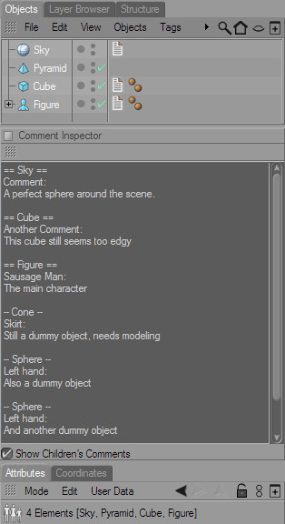

The Comment Inspector
The Comment Inspector is a very useful thing. It allows you to see the comments of all selected objects at the same time, without having to take a look into each and every Comment Tag.
When you select the Comment Inspector from the menu, the manager will appear. If you work with comments a lot, it's a good idea to dock the dialog into your layout.

Whenever you select one or more objects that carry a Comment Tag, the objects' names, comment titles and comment texts will appear in the Comment Inspector. If a tag has a special icon style, it will also be mentioned.
Show children's Comments
Activate this option to show comments of objects that are children of the selected objects.